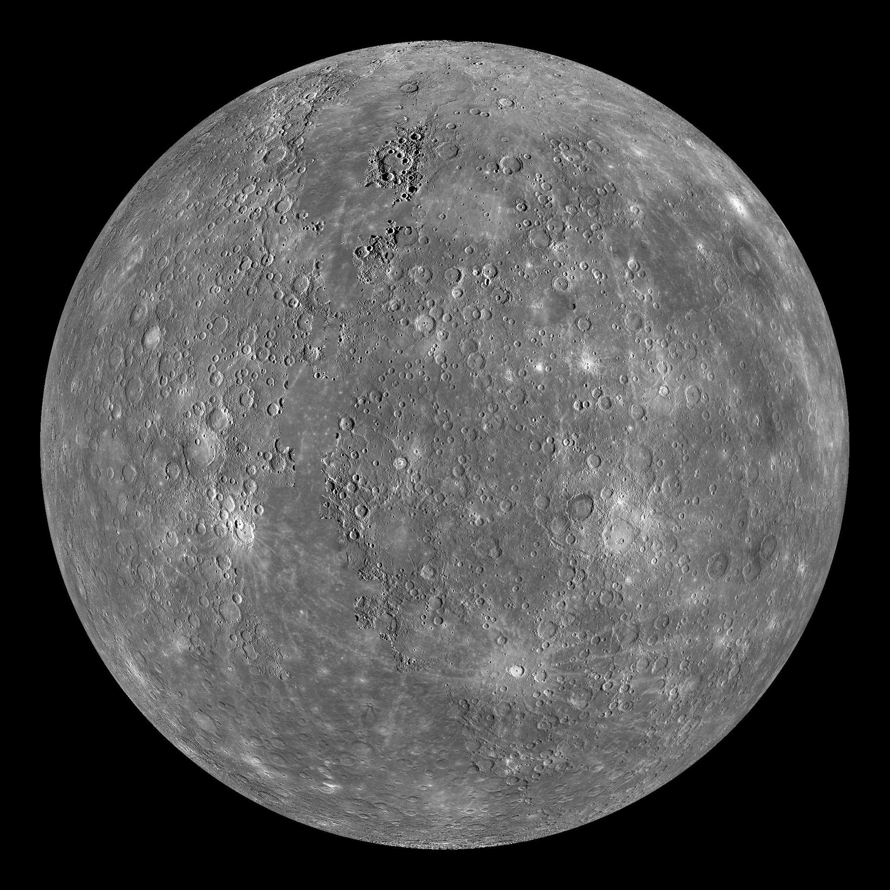
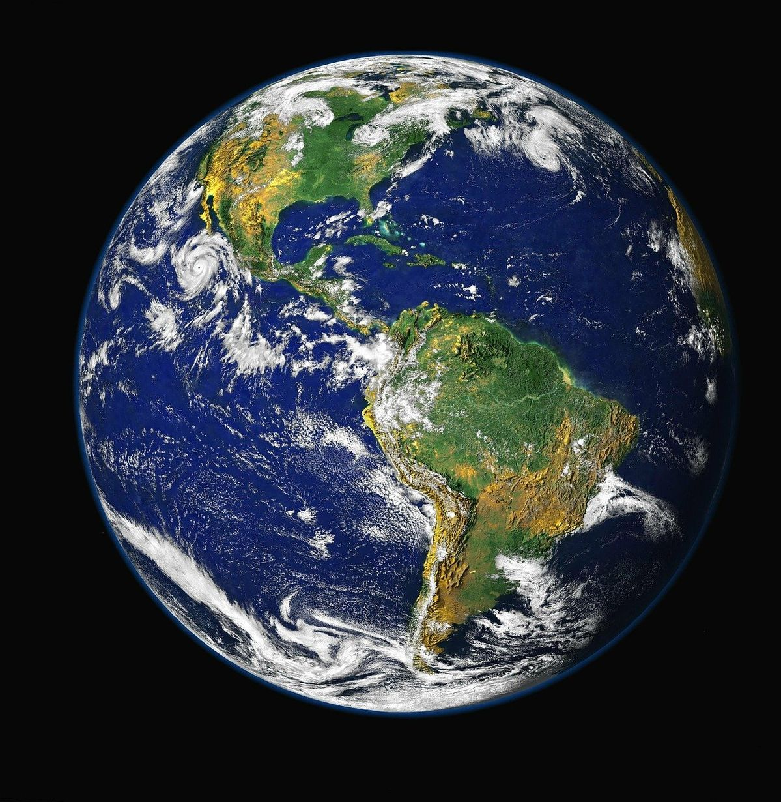
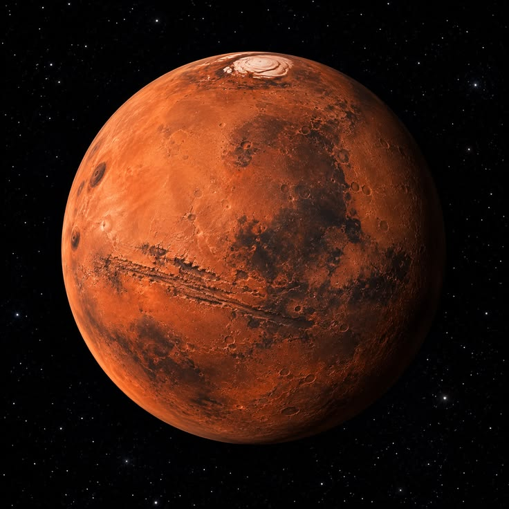
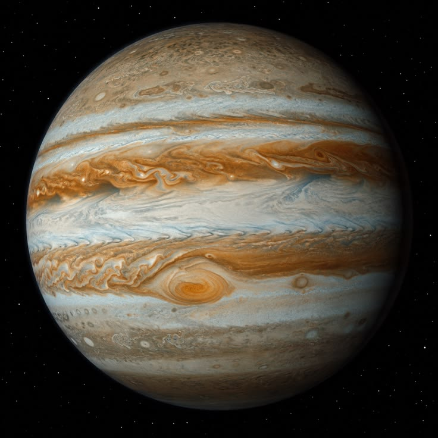
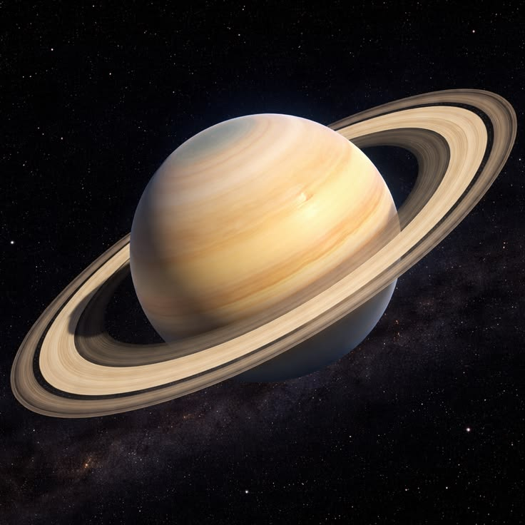
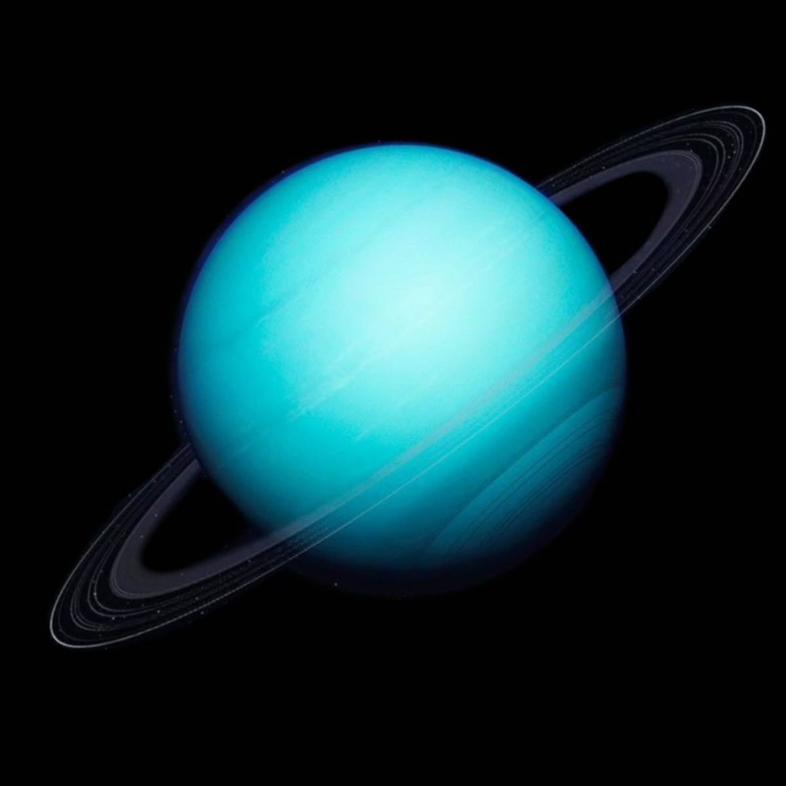
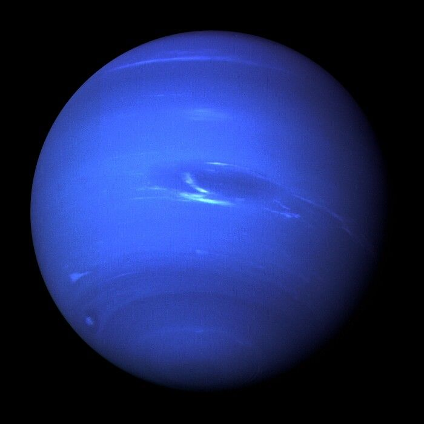

Merkurius
Planet terkecil dan terdekat dengan Matahari.
MENGENAL ALAM SEMESTA
Kenali keindahan dan keunikan delapan planet yang mengelilingi Matahari dalam tata surya kita.
Jelajahi PlanetTata surya adalah sistem yang terdiri dari Matahari dan berbagai benda langit yang terikat oleh gaya gravitasi, termasuk delapan planet yang mengelilingi Matahari.
Kenali karakteristik setiap planet di tata surya.

Planet terkecil dan terdekat dengan Matahari.

Planet dengan atmosfer sangat panas dan tebal.

Planet tempat tinggal kita dan rumah bagi kehidupan.

Dikenal sebagai Planet Merah.

Planet terbesar di tata surya.

Planet yang terkenal dengan sistem cincinnya.

Planet raksasa es dengan sumbu rotasi yang sangat miring.

Planet terjauh dari Matahari di antara delapan planet.
Beberapa hal seru tentang tata surya yang perlu kamu tahu.
Matahari merupakan bintang di pusat tata surya.
Jupiter adalah planet terbesar di tata surya.
Satu tahun di Neptunus setara sekitar 165 tahun Bumi.